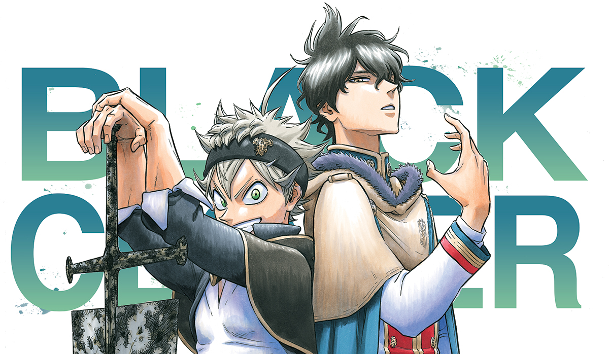

Yūki Tabata
Yūki Tabata comenzó su carrera como novato cuando presentó su primer trabajo, Grave Keeper HAKAMORI para el Premio Tenkaichi Manga 2001, en el que recibió un Premio Especial del Jurado. Luego recibió otro premio de golpe, Blue Steady for a Rookie Manga Award en 2003, donde fue uno de los finalistas. En 2004, Tabata ingresó a la competencia del Premio Tezuka donde recibió una mención de honor por su trabajo, XXX WITH NO NAME. Tabata luego comenzó su carrera profesional cuando publicó un one-shot, Garance, en 2005 Akamaru Jump.
En 2011, Tabata ingresó en la Golden Future Cup, que le permitió publicar una oportunidad única en la revista Weekly Shōnen Jump como parte de una competencia. Publicó un one-shot llamado Hungry Joker y logró ganar la competencia antes mencionada. Esto dio lugar a que su versión de un solo golpe fuera considerada para ser serializada por la revista. La serialización de Hungry Joker comenzó en noviembre de 2012 en la edición No 50 de la revista. La serie recibió varias críticas debido a la gran partida que la serie había tomado del original de un solo disparo. Debido a esto, Hungry Joker no logró popularidad y fue cancelado después de 24 capítulos en mayo de 2013 en el No 24 de la revista.
Un año después, Tabata publicó un nuevo one-shot en el 2do Número de 2014 de la revista Jump NEXT, llamado Black Clover. El one-shot fue considerado una vez más para la serialización de Weekly Shōnen Jump y comenzó la serialización en febrero de 2015 en el No 12 de la revista. Para su segunda serialización, Tabata decidió tomar una inspiración mucho más cercana del original de una oportunidad donde el diseño de los personajes principales y las personalidades, junto con los ajustes fundamentales, se llevaron a cabo en la serie. A partir del 12 de mayo de 2018, la serie ha publicado 190 capítulos y todavía está en curso.
